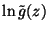

|
You are here : Control System Design - Index | Book Contents | Appendix C | Section C.8.2 C. Results From Analytic Function TheoryC.8.2 Poisson-Jensen Formula for the half planeLemma 1.1 Consider a function g(z) with the following properties
Consider also a point z0 = x0 + jy0 such that x0 > 0, then
Proof Let
Then,  is analytic within the closed unit disk. If we now apply Theorem C.9 to , we obtain
We also recall that if x is any complex number, then . Thus the result follows on equating real parts in the equation above and on noting that
|